Leading Indicators 1: Real Interest Rates & the Yield Curve
How the bond market — real rates and the shape of the yield curve — leads the economy and equities.
Real interest rates and the yield curve are leading indicators that move before growth, telling you the liquidity regime and where equities get re-priced.
The gist
- A macro view needs two lenses: Growth drives the "E" in P/E, Liquidity drives the "P". Abundant (cheap) liquidity lifts asset prices; scarce (expensive) liquidity pushes them down.
- The US 10-year Treasury yield is the risk-free benchmark: the world's most liquid non-derivative debt instrument, and the discount rate (r) in DCF that prices equities.
- Real interest rate = nominal rate − inflation (CPI-adjusted). Falling/negative real rates coincide with rising S&P 500 prices and expanding P/E; higher real rates coincide with lower valuations and higher volatility.
- The yield curve has three states — Normal (upward, expansion expected), Flat (transition), Inverted (short yields above long yields, signalling stress/contraction/possible recession).
- The 10s-2s spread is the anchor: inversion has preceded recessions (e.g. 2006-07 before the 2008 crisis; front-end inversion Feb 2020).
- Caveat: there is no fixed rule book — Fed intervention (QE, bond buying) distorts the signal, so use these indicators alongside VIX/volatility rather than mechanically.
Two lenses: Growth AND Liquidity
- Lesson 3 covered GDP/Growth; a full macro view must ALSO be seen through Liquidity.
- Every stock market has a P/E: Economic Growth drives the "E" (earnings), Liquidity drives the "P" (price).
- Liquidity abundant (high supply) → cost is cheap (low); scarce (low supply) → cost is expensive (high).
- Abundant liquidity drives financial-asset prices higher; scarce liquidity pushes them down, including the stock market.
The "price/cost of money" is interest rates. This lesson adds the liquidity dimension on top of the growth dimension from the GDP lesson.
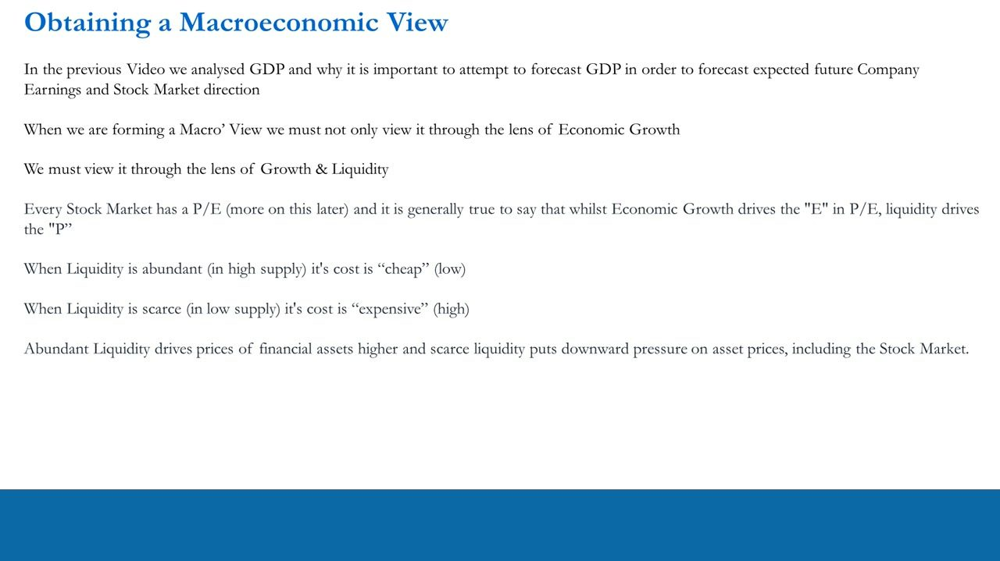
Why equities traders must watch bonds & rates
- Most retail and many professional traders ignore bonds/rates — usually from lack of confidence, not because it's unimportant.
- You don't need to be a bond expert, only a generalist understanding of how money is priced.
- The price of money is interest rates; it is set firstly by wholesale money markets and secondly by the banking sector (loan costs).
- Where rates clear affects equity index levels (relative value: Equities vs Bonds) and individual valuations (a company's debt size and cost).
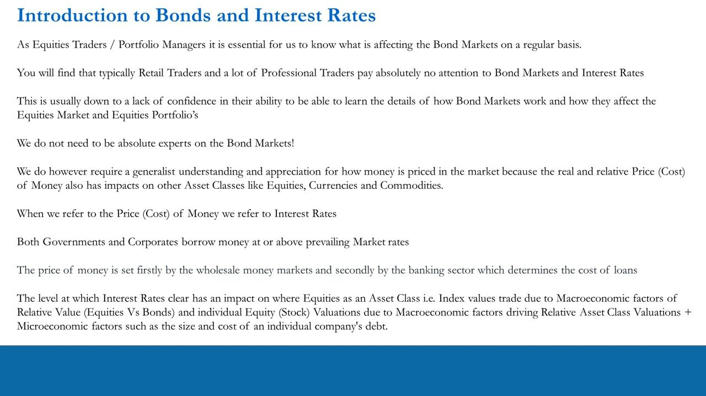
What is an interest rate? (Central-bank policy rates)
- When a central bank adjusts rates it is deliberately changing the price (cost) of money — conventional monetary policy.
- Needs stimulus → cut rates (encourage investment/consumption); too much inflation/excess demand → raise rates.
- Named differently by bank: Fed Funds Rate (US Fed), Main Refinancing Operations "MRO" (ECB), Base Rate (Bank of England).
- All set the annual % rate at which banks lend/borrow overnight, aiming to flow through to the real economy via bank lending.
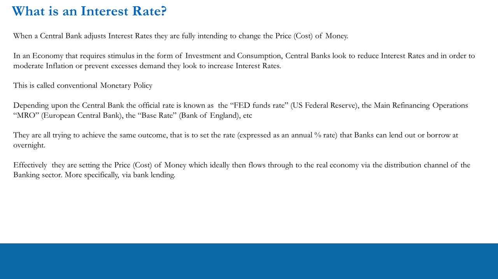
Market interest rates & the 10-year benchmark
- Central banks set official rates, but markets for notes, bonds and wholesale money collectively set "market" rates.
- The 10-year Treasury note rate is what the US Government borrows at over 10 years — the market's benchmark rate; its yield is the "10-year yield".
- The US 10Y is the world's most liquid, widely traded non-derivative debt instrument; the US Treasury market is the deepest, most liquid market and its securities serve as global collateral (denominated in USD).
- Other instruments are priced as "spreads" over the benchmark — corporate bonds, swaps, mortgages, fixed-rate loans — set by borrower risk: Higher risk = higher rates; lower risk = lower rates.
The US Government is considered the safest borrower in the world (historically never defaulted), and the Fed is lender of last resort.
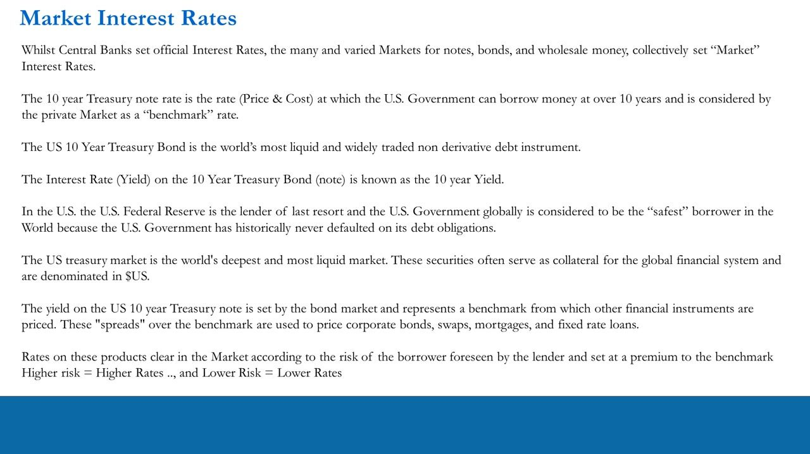
Issuers, buyers & the size of bond markets
- Issuer of US government bonds = the US Treasury (finances government spending); buyers = pension/mutual/hedge funds, investment & commercial banks, individuals, foreign central banks.
- Debt trades Over-The-Counter (OTC), unlike exchange-traded equities; bond futures (e.g. Eurodollar futures) trade on exchange.
- Largest, most liquid bond markets: US Treasuries (USD), European Government Bonds (EUR), UK Gilts (GBP), Japanese Government Bonds/JGBs (JPY).
- US bond markets ≈ $40 trillion vs ~$20 trillion domestic stocks; bond daily volume ~$700 billion ≈ 3.5x equities — so market rates are an important, efficient relative-value indicator.
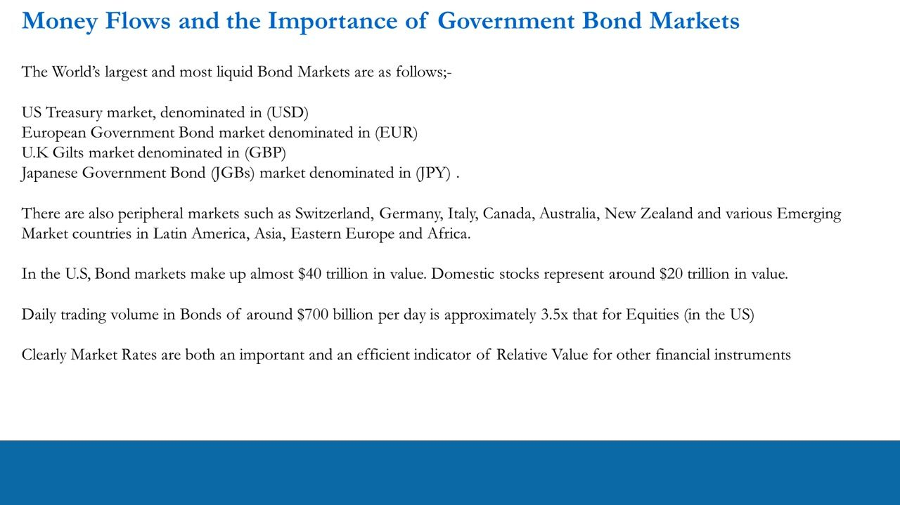
Equity valuations through the interest-rate cycle
- The cycle loops clockwise: (1) money becomes cheap → (2) governments, companies, individuals borrow more → (3) higher growth prospects, consumption and investment → (4) higher equity valuations and earnings → (5) money becomes expensive → back to the start.
- As the cycle turns, equities get re-priced higher and lower according to where real rates are trading.
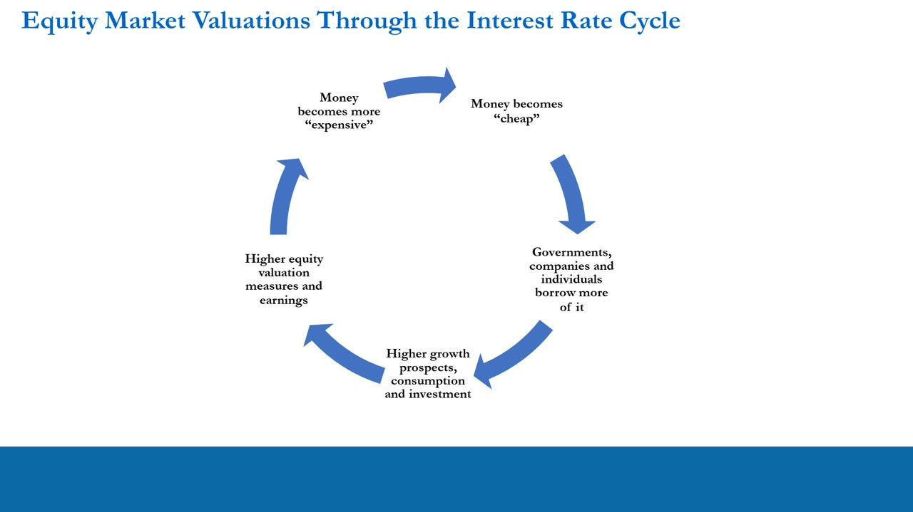
The risk-free rate = the 10-year
- There are several proxies for the risk-free rate; this course uses the 10-year US T-note — the most widely tracked government debt instrument / main benchmark.
- Its yield is used by the market to set other rates (corporate bonds, swaps, mortgages, fixed-rate loans).
- The risk-free rate IS the benchmark.
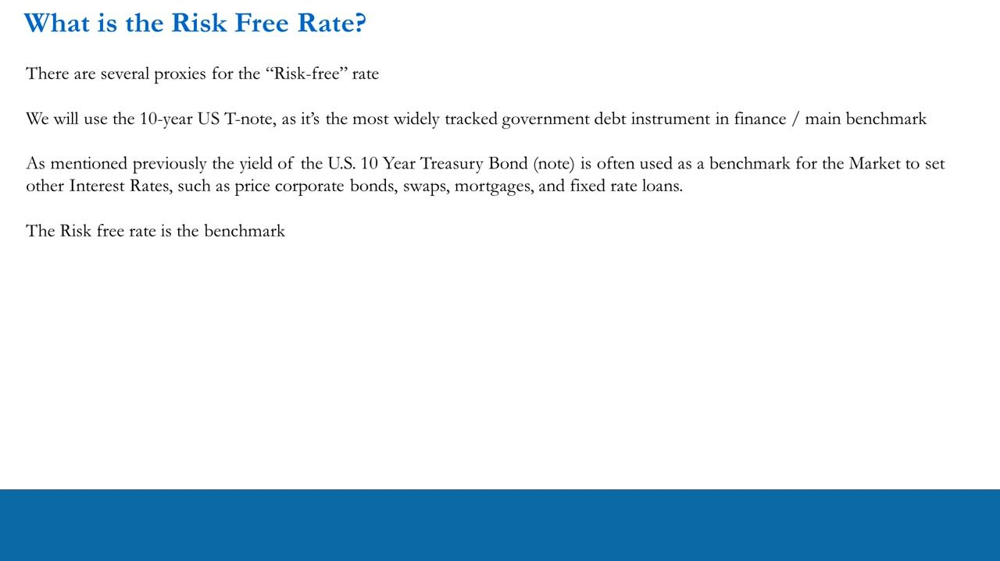
DCF: the risk-free rate is the discount factor
- DCF = CF1/(1+r)^1 + CF2/(1+r)^2 + ... + CFn/(1+r)^n, where r = interest rate, CFi = cash flow in period i, n = years to the future cash flow.
- The risk-free rate (r) is the Discount Factor; the DCF result is the Present Value (PV) of all future cash flows.
- A LOWER discount factor → HIGHER PV of future cash flows; a HIGHER discount factor → LOWER PV.
- So when real rates are close to or below 0, the S&P 500 commands a HIGHER P/E multiple (future earnings discounted to a higher PV).
The risk-free rate is a subjective yet fundamental driver of equity valuation. Central banks buying bonds to hold nominal and real rates low keeps equity valuations elevated (the course teaches the implications, not the specific CB actions, since those change).
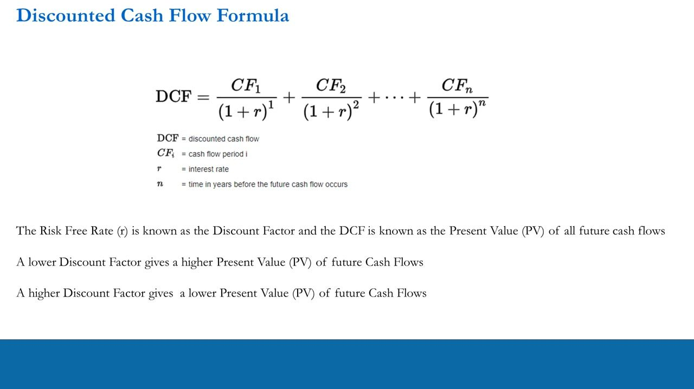
Real rates vs the S&P 500 price & P/E
- Real interest rate = nominal rate − inflation (US: CPI-adjusted) — the inflation-adjusted cost of money.
- Chart overlay (as of end-2020): Real 10Y Yield (Core CPI) = -0.71%, S&P 500 = 3768.25, P/E = 22.86.
- Inverse relationship: falling/negative real rates coincide with rising S&P 500 prices and expanding P/E multiples.
Nominal rates alone mean little; a 5% rate with 5% inflation is 0% real. Real rates 'mean everything' for asset allocation and equity valuation.
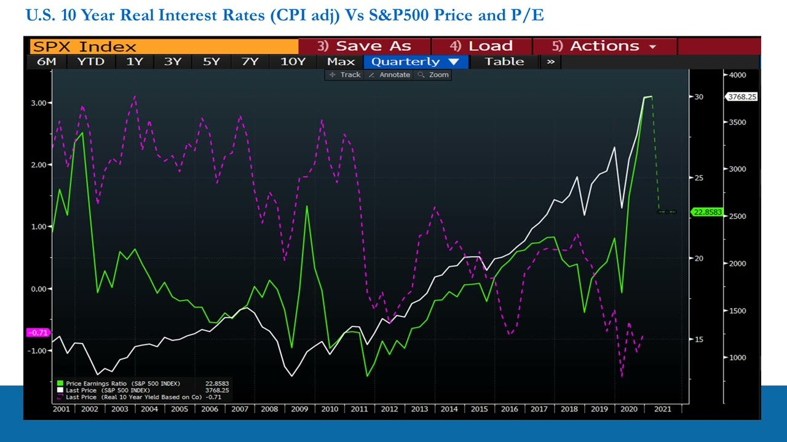
Real rates vs VIX (the volatility/liquidity link)
- Chart overlay: Real 10Y Yield (RR10CUS, Core CPI) = -0.71 as of 12/31/20; VIX = 21.91.
- Lower/negative real rates → more liquidity → suppressed equity volatility; higher real rates → less liquidity → more volatility.
- Through 2011-2020 the Fed held real rates below ~1% (often negative) and the VIX stayed suppressed in the teens, spiking only in stress episodes (2008-09, 2011, COVID 2020).
Real rates are a leading indicator for both risk-asset values AND the liquidity/volatility environment.
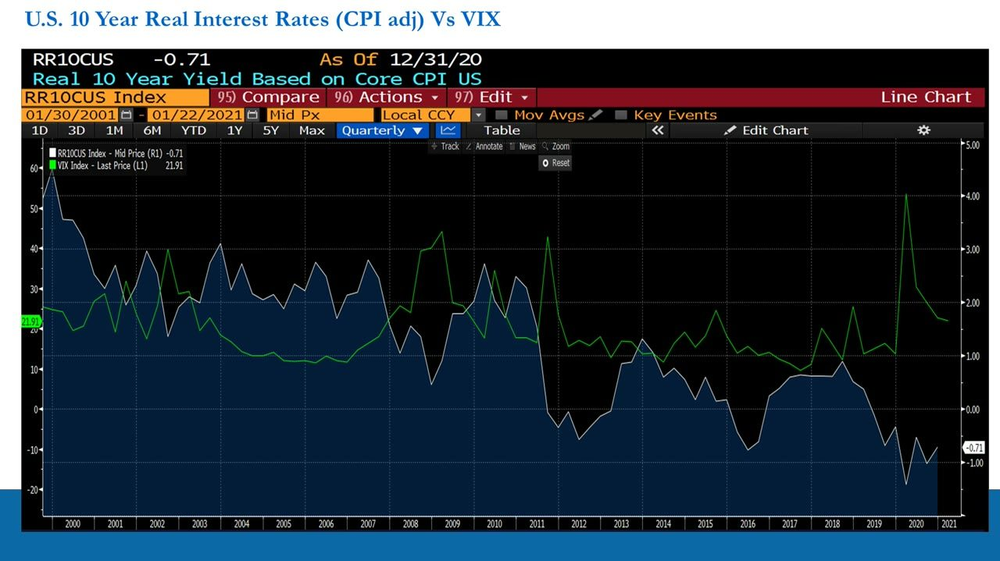
How a yield curve works — three states
- The curve plots yields on Treasuries of different maturities (Fed Funds, 1mo, 3mo, 6mo, 1yr, 2yr, 3yr, 5yr, 7yr, 10yr, 20yr) at a point in time; it is dynamic and changes every day.
- Its shape reflects market expectations of short- and long-term rates based on growth projections and central-bank policy.
- Three states: 1. Normal Yield Curve, 2. Flat Yield Curve, 3. Inverted Yield Curve.
- Example curves: 3-Jan-21 (low/flat, near-zero regime) vs 8-Nov-15 (higher) — both upward-sloping and normal, from ~0.1% short-end up to 1.46% / 2.76% at 20yr.
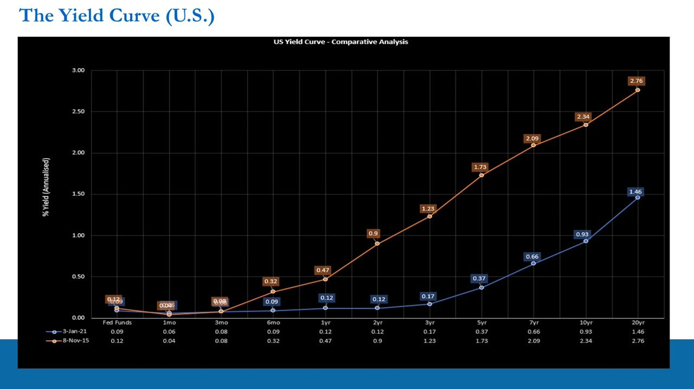
The Normal (upward-sloping) yield curve
- Normal = longer-term rates higher than shorter-term rates; this is the case most of the time.
- In normal expansion, the market demands a higher yield to lend longer-term (the risk of time — money tied up longer demands more yield).
- More importantly, an upward-sloping curve signifies the market EXPECTS future economic expansion.
- Mechanics: investors sell long-term bonds (higher rates) to buy short-term bonds (lower rates) — they want short-term liquidity and to buy risk assets like equities. When they expect expansion the curve STEEPENS; when they expect contraction it flattens/inverts.
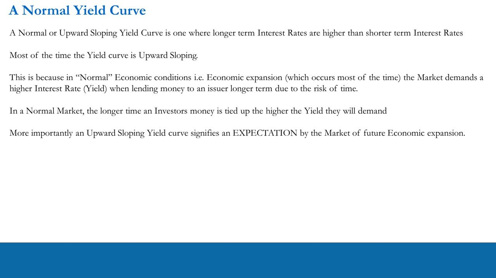
The Inverted yield curve (recession signal)
- Inverted = yields on shorter-maturity bonds are HIGHER than longer-maturity bonds — an abnormal situation signalling expected financial stress and an impending GDP slowdown/contraction, possibly recession (2 consecutive quarters of negative GDP).
- It signals earnings contraction and/or financial stress for companies — a leading indicator for equities.
- Why: investors have lost confidence in the short-term economy → SELL short-term bonds (higher yields) and equities, BUY long-term bonds (lower yields), tying up money for years because they expect conditions to deteriorate.
- The 10s-2s spread is the anchor. 2005-06 example: 24-Jul-05 normal (Fed Funds 3.25); by 24-Dec-06 (Fed Funds 5.24) inverted — 10yr 4.63 below 2yr 4.71 — the classic pre-2008 inversion. Feb 2020: front-end inverted (1mo 1.56 > 10yr 1.51) ahead of the COVID shock.
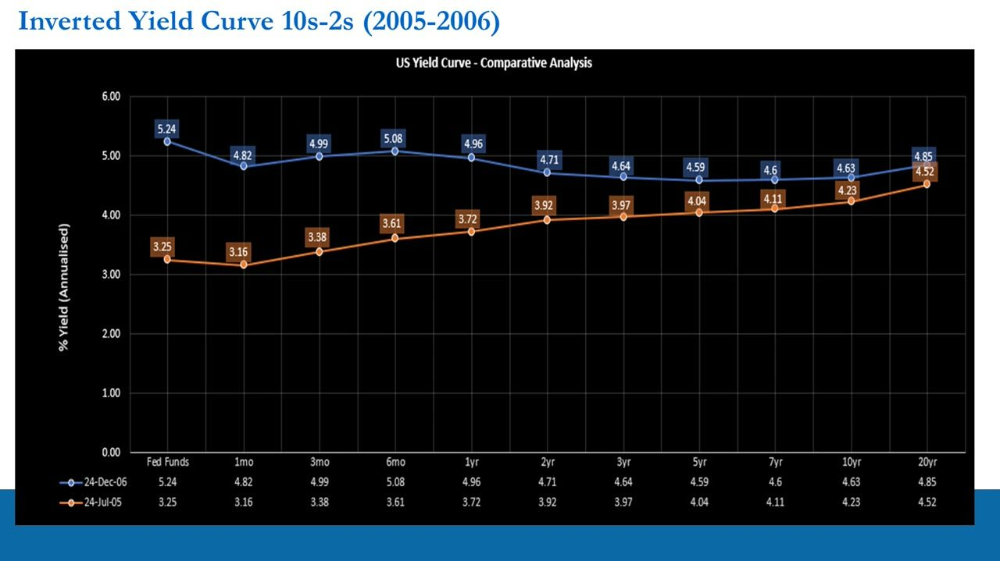
The Flat yield curve (the transition)
- Flat = the transition period between Normal and Inverted.
- Expansion → slowdown/contraction: long yields fall relative to short yields (which rise relative); investors buy long bonds, sell short bonds and equities → Flat but INVERTING.
- Contraction → expansion (the reverse): investors buy short bonds and equities, sell long bonds → Flat but STEEPENING.
- Fed caveat: modern accommodative policy / QE (short-term bond buying) distorts the Treasury price mechanism — 'the Fed is not stupid; they see what you see and act.' In 2019 the curve was flat and inverting, but the accommodative Fed kept the economy/market from tanking; it took the exogenous COVID shock to truly invert it, after which record bond purchases sent it back to flat then steepening.
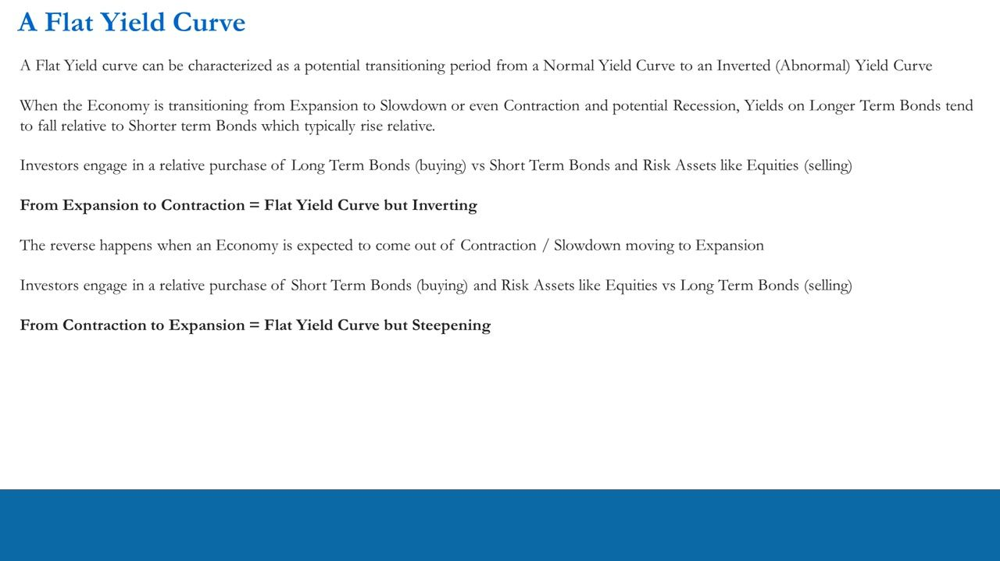
Tying it all together
- Covered: nominal rates, real rates, and the yield curve — the benchmark (US Treasury) bond market in absolute and relative-value terms vs equities.
- Together, real interest rates and the yield curve ARE leading indicators — they tend to move before the economy (growth) and indicate liquidity.
- Real rates = the inflation-adjusted cost of money → leading indicator for future risk-asset (S&P 500) values.
- The yield curve = the market's expectation of short- vs long-term economic risk → also a leading indicator for equities.
- CAVEAT: due to Fed actions there is no rule book saying you MUST buy or sell equities on a given rate/curve move. Knowing what's going on is what's crucial — combine these with VIX/volatility signals and best practices.
'Knowing which way the wind (growth) is blowing and liquidity conditions' lets traders act in the present to benefit from future moves and avoid getting caught in losing positions when the macro environment shifts.
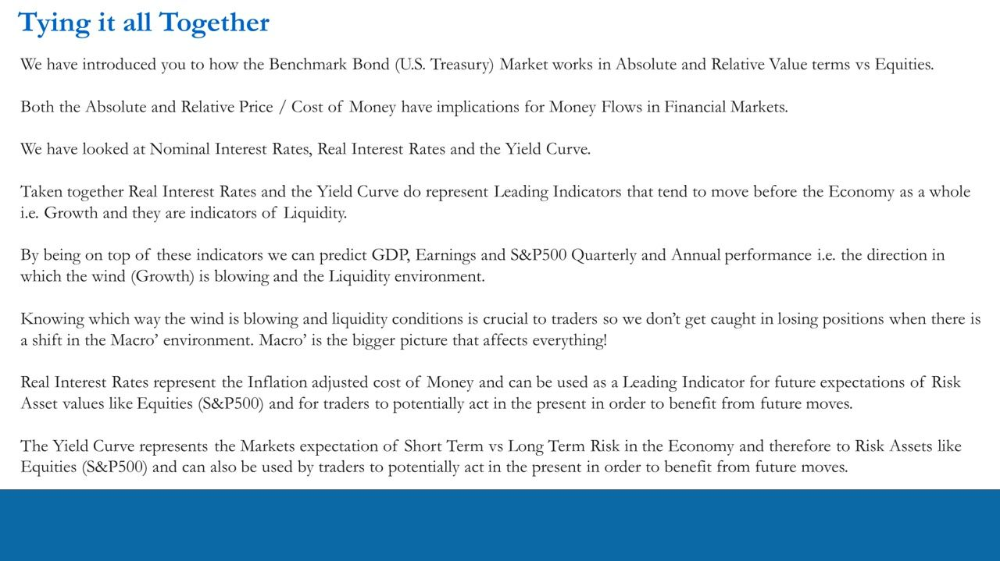
Glossary
- Price/Cost of MoneyInterest rates. Set firstly by wholesale money markets, secondly by the banking sector; the real and relative cost of money drives money flows across asset classes.
- P = Liquidity, E = GrowthIn a market's P/E ratio, economic growth drives the earnings (E) and liquidity drives the price (P).
- 10-Year Treasury YieldThe rate at which the US Government borrows over 10 years; the world's most liquid non-derivative debt instrument and the market's benchmark risk-free rate off which other instruments are priced as spreads.
- Risk-Free RateThe benchmark discount rate; this course uses the 10-year US T-note. It is the 'r' (discount factor) in DCF valuation.
- Real Interest RateNominal rate minus inflation (US: CPI-adjusted) — the inflation-adjusted cost of money. Real rates drive asset allocation; nominal rates alone mean little.
- Discounted Cash Flow (DCF)PV of future cash flows: CF1/(1+r)^1 + ... + CFn/(1+r)^n. A lower discount factor (r) raises the PV; a higher one lowers it, so lower real rates support higher P/E multiples.
- Normal Yield CurveUpward-sloping — long-term yields higher than short-term. The usual state; signifies market expectation of economic expansion. Steepens when more expansion is expected.
- Flat Yield CurveThe transition state between normal and inverted. Flat-and-inverting = expansion → contraction; flat-and-steepening = contraction → expansion.
- Inverted Yield CurveShort-maturity yields higher than long-maturity yields — abnormal; signals lost short-term confidence, expected financial stress, GDP contraction and possible recession. Leading indicator for equity earnings contraction.
- 10s-2s SpreadThe 10-year minus 2-year yield; the market's anchor for the curve. A negative 10s-2s (inversion) has preceded recessions (e.g. 2006-07 before the 2008 crisis).
- RecessionTwo consecutive quarters of negative real GDP growth.
- Conventional Monetary PolicyA central bank raising/cutting its official overnight rate (Fed Funds / ECB MRO / BoE Base Rate) to change the cost of money and stimulate or moderate the economy.